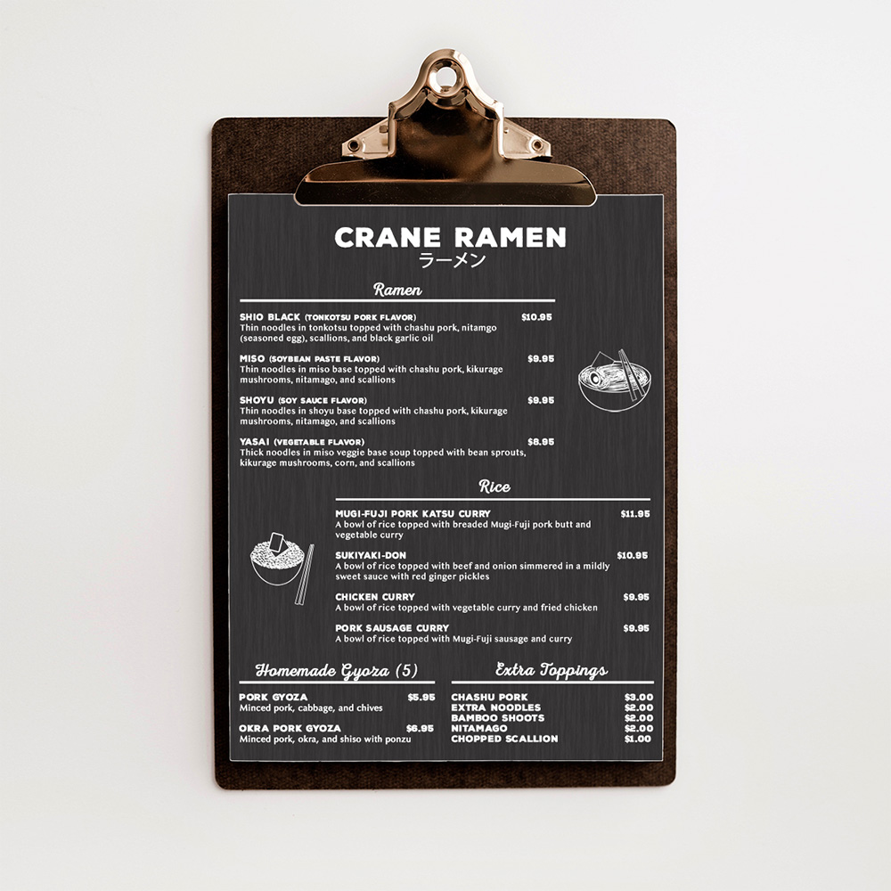

The UF Association of Asian Alumni sought a logo to distinct themselves from other alumni organizations while preserving their affiliation to University of Florida. Design choices were carefully thought out to establish a flow between the elements of the logo and its connection to the greater University of Florida.
This menu design was inspired by the restaurant's rustic style that includes dark wood and charcoal colored features. It embraces nature-inspired textures and maintains clarity with its simplistic, easy to read appearance.
